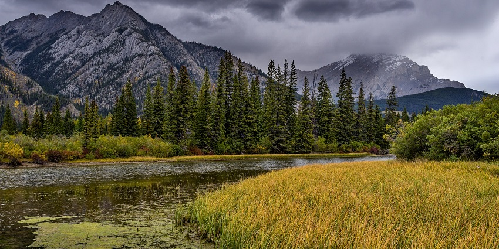

Barnawapara Wildlife Santuary is one of the most famous wildlife santuaries in Chhattisgarh It is known for its rich forests, wildlife, and peaceful natural environment there are 2 forests "bar" and "nawapara" there are many natural places in which you can melt by seeing the places
There are many attractive resorts for view.
Best Season: november to june (closed in monsoon)
Time Required: 2-3 hours
Tour Price: ₹5,999 (2 Days)